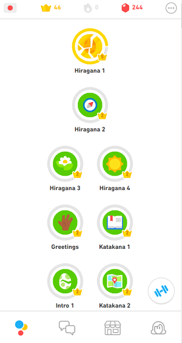
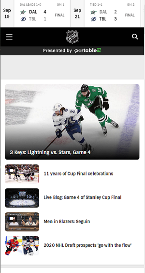

Visual Hierarchy
Bundesliga
https://www.bundesliga.com
On this page of the German soccer league, you can clearly see that the picture (which is clickable) is the most important thing, therefore it's the biggest. It gives you the latest news about the soccer league, the most recent article posted on the website. Then, you can see the scores of every game at the top of the screen and a countdown to the next game. Finally, you can see the sponsors at the bottom. Even though they are at the bottom, they are pretty big in size, probably because they pay for their logo to be seen. This exemplifies Visual Hierarchy because prominent visuals get your attention.
Fitt's Law
Duolingo
https://www.duolingo.com On this Duolingo page, the language lessons are all at the center of the screen. It's the easiest and biggest thing to click on because learning and starting a new lesson is what you will want to do most of the time. You can see that the review button at the bottom right corner in blue is a little smaller. Then you have the menu with the settings, etc. at the bottom of the screen, which you will rarely use. This exemplifies Fitt's Law because it shows that the distance to a target and its size determines its importance.
PARC: Alignment
NHL
https://www.nhl.com On the website of the National Hockey League, you can see how the scores on the top of the screen are nicely aligned. In a different way, an alignment effect is also produced at the bottom of the viewport. You can scroll through the articles that are nicely aligned vertically with a picture on the left and a title on the right. This enhances the page layout thanks to Alignment.